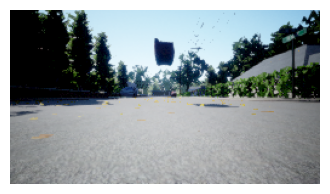
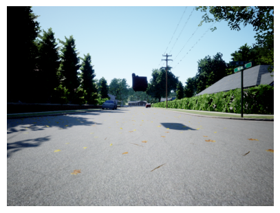

# no export #| default_exp airsimAirsim Walkthrough
Documentation for using Microsoft Airsim in a Jupyter notebook
# logging.basicConfig(format='%(asctime)-8s,%(msecs)-3d %(levelname)5s [%(filename)10s:%(lineno)3d] %(message)s',
# datefmt='%H:%M:%S',
# level=logging.INFO) # Todo add this to params
# logger = logging.getLogger(__name__)from mavcom.utils.display import *
from mavcom.utils.sim_linux import *
from mavcom.airsim.client import *
# import mavcom.utils.sim_linux as simAirsim Connection
RunSim
RunSim (name:str='Coastline', resx:int=800, resy:int=600, windowed:str|None='windowed', settings:str|pathlib.Path|None=None)
Run the Airsim simulator
| Type | Default | Details | |
|---|---|---|---|
| name | str | Coastline | name of the simulator environment |
| resx | int | 800 | window size x |
| resy | int | 600 | window size y |
| windowed | str | None | windowed | windowed or fullscreen |
| settings | str | Path | None | None | settings file |
rs = RunSim("AirSimNH", settings="config/airsim_settings_high_res.json")ERROR|10.762| mavcom.RunSim | sim_linux.: 73 | MainThread | MainProces | Settings file config/settings_high_res.json not found.
INFO |10.763| mavcom.RunSim | sim_linux.: 75 | MainThread | MainProces | Settings file None found.Airsim AirSimNH already running.AirSimClient
AirSimClient (ip='', port:int=41451, timeout_value=3600)
Multirotor Client for the Airsim simulator with higher level procedures
| Type | Default | Details | |
|---|---|---|---|
| ip | str | rpc connection address | |
| port | int | 41451 | rpc connection port |
| timeout_value | int | 3600 | timeout for client ping in seconds |
asc = AirSimClient()Connected!
Client Ver:1 (Min Req: 1), Server Ver:1 (Min Req: 1)Simulator assets
assets can be listed with rs.client.simListAssets() and placed within the environment with rs.place_asset(x,y,z,asset_name)
VehicleClient.simListAssets
VehicleClient.simListAssets ()
Lists all the assets present in the Asset Registry
Returns: list[str]: Names of all the assets
assets = asc.simListAssets()
print(f"Assets: {assets}")Assets: ['Sphere', 'Cone', 'Cylinder', 'SM_SkySphere', 'Garage_Door_01offset', 'Garage_Mech_01', 'Garage_Door_02offset', 'Garage_Half_Mech_01', 'Inner_Door_01', 'Hinge_01', 'Outer_Door_01', 'Fan_Blades_01', 'Fan_Base_01', 'Outer_Wall_Quart_Win_06', 'Veranda_01', 'Street_Sign_02', 'Street_Sign_01', 'Stop_Sign_02', 'Stop_Sign_01', 'Rock_01', 'Power_Line_Connector_01', 'Power_Line_Complete_01', 'Power_Line_Cable_Single_01', 'Power_Line_Cable_01_Spline', 'Power_Line_01', 'Path_01', 'Monument_01', 'Garden_Tressel_02', 'Garden_Tressel_01', 'Garden_Rocks_01', 'Garden_Chair_01', 'Fence_01', 'Drain_Pipe_02', 'Drain_Pipe_01', 'Car_01', 'bin_02', 'bin_01', 'Bench_01', 'Basketball_Hoop_01', 'Skateboard_01', 'Plug_Socket_01', 'Picture_Frame_01', 'Paint_Can_01', 'Mug_01', 'Light_Switch_01', 'Fridge_Alphabet_01', 'extractor_01', 'Dufflebag_01', 'Drinks_Can_07', 'Drinks_Can_06', 'Drinks_Can_05', 'Drinks_Can_04', 'Drinks_Can_03', 'Drinks_Can_01', 'Curtain_03', 'Curtain_02', 'Curtain_01', 'Book_01', 'Toilet_01', 'table_01', 'Sofa_02', 'Sofa_01', 'small_table_03', 'small_table_02', 'small_table_01', 'Sink_01', 'Shutters_01', 'Shelf_01', 'Pool_Table_01', 'Office_Desk_01', 'Kitchen_Unit_Sink_01', 'Kitchen_Unit_Corner_01', 'Kitchen_Unit_02', 'Kitchen_Unit_01', 'Kitchen_Splash_Tile_01', 'Kitchen_Cupboard_Fan_01', 'Kitchen_Cupboard_02', 'Fireplace_01', 'coffee_table_02', 'coffee_table_01', 'Chair_01', 'Bookcase_02', 'Bookcase_01', 'Bed_Double_02', 'Bed_Double_01', 'Tree_01', 'Oak_03', 'Leaves_01', 'Hedge_03', 'Hedge_02', 'Hedge_01', 'Grass_Large_01', 'Grass_01', 'Fir_01', 'Daisys_01', 'Birch_01', 'Tft_01', 'Tablet_01', 'Oven_01', 'Mouse_01', 'Lcd_01', 'Laptop_01', 'Lamp_01', 'Keyboard_01', 'Headphones_01', 'Gamepad_01', 'Fridge_01', 'fan_01', 'Desktop_01', 'BRPlayer_01', 'Wall_Low_Quart_01', 'Wall_Low_Half_01', 'Wall_Low_End_01', 'Wall_Low_8th_01', 'Wall_Low_01', 'Swimming_Pool_Steps_02', 'Swimming_Pool_Steps_01', 'Swimming_Pool_Floor_01', 'Swimming_Pool_Edge_01', 'Swimming_Pool_Curve_01', 'Stairs_Beam_Quart_01', 'Staircase_Extra_Banister_01', 'Staircase_03', 'Staircase_02', 'Staircase_01', 'Banister_Roof_Angle_01', 'Banister_End_01', 'Banister_01', 'Roof_Flat_Open_Apex_01', 'Roof_Flat_Open_01', 'Roof_Flat_01', 'Roof_Quart_Open_03', 'Roof_Quart_Open_01', 'Roof_Quart_Corner_01', 'Roof_Open_01', 'Roof_Middle_Half_Half_01', 'Roof_Middle_Half_01', 'Roof_Middle_Apex_02', 'Roof_Middle_Apex_01', 'Roof_Middle_01', 'Roof_Half_01', 'Roof_End_Thin_01', 'Roof_Edge_Half_Middle_01', 'Roof_Edge_End_02', 'Roof_Edge_End_01', 'Roof_Corner_02', 'Roof_Corner_01', 'Roof_Apex_Fill_01', 'Roof_01', 'Outer_Wall_Quart_Roof_02', 'Outer_Wall_Quart_Roof_01', 'Road_Drive_Opening_03New', 'Road_Drive_Opening_02New', 'Road_Corner_01', 'Road_4Way_01NEW', 'Road_3Way_01New', 'Road_01New', 'Porch_Pillar_01', 'Porch_Middle_01', 'Porch_Corner_01', 'Porch_Banister_Quart_01', 'Porch_Banister_8th_01', 'Outdoor_Steps_01', 'Structural_Support_01', 'Outer_Wall_Quart_Win_05', 'Outer_Wall_Quart_Win_04', 'Outer_Wall_Quart_Win_03', 'Outer_Wall_Quart_Win_02', 'Outer_Wall_quart_Win_01', 'Outer_Wall_Quart_Garage_01', 'Outer_Wall_Quart_Door_03', 'Outer_Wall_quart_door_02', 'Outer_Wall_Quart_Door_01', 'Outer_Wall_Quart_01', 'Outer_Wall_Half_Win_02', 'Outer_Wall_Half_Win_01', 'Outer_Wall_Half_Garage_02', 'Outer_Wall_Half_Garage_01', 'Outer_Wall_Half_Door_01', 'Outer_Wall_Half_Apex_01', 'Outer_Wall_Half_01', 'Outer_Wall_8th_Win_01', 'Outer_Wall_8th_Door_01', 'Outer_Wall_8th_01', 'Outer_Wall_16th_01', 'Outer_Wall_01', 'House_Base_Quart_01', 'Cladding_Edge_01', '9', '7', '6', '5', '3', '2', '1', 'Inner_Wall_Roof_01', 'Inner_Wall_Quart_plus_8th_01', 'Inner_Wall_Quart_Door_01', 'Inner_Wall_Quart_Arch_01', 'Inner_Wall_Quart_01', 'Inner_Wall_Half_Door_01', 'Inner_Wall_Half_Arch_01', 'Inner_Wall_Half_01', 'Inner_Wall_Close_Gap_01', 'Inner_Wall_8th_Door_01', 'Inner_Wall_8th_Arch_01', 'Inner_Wall_8th_01', 'Inner_Wall_16th_01', 'Outer_Wall_Quart_Floor_01', 'Outer_Wall_Quart_Base_01', 'Floor_Quart_01', 'Floor_Half_Stairs_01', 'Floor_Half_Half_01', 'Floor_Half_Basic_01', 'Floor_Half_01', 'Floor_Basic_01', 'Floor_8th__01', 'Floor_01', 'Driveway_Quart_01', 'Driveway_Half_01', 'Driveway_Edge_01', 'Driveway_8th_01', 'driveway_16th_Curve_02', 'driveway_16th_Curve_01', 'Driveway_16th_01', 'Driveway_01', 'Chimney_Top_01', 'Chimney_Roof_01', 'Chimney_Mid_01', 'Chimney_Base_02', 'Chimney_Base_01', 'Cube', 'Schoolbus_Small_FixedTransforms', 'boxtruck_WithHeadlights_boxtruck_fixedtransforms_LOD0', 'Vehicle_Police_ISM', 'Ambulance_Truck_FixedTransforms', 'BicycleMan', '009_SUV_ISM_NewMat', 'Saloon_ISM_NewMat', '006_Hatchback_ISM_NewMat', 'Plane', 'S_1_Unit_Plane', 'right_OculusTouch_v3Controller', 'left_OculusTouch_v3Controller', 'right_ValveIndexController', 'left_ValveIndexController', 'GoogleDaydreamController', 'HTCViveController', 'right_OculusTouchController', 'left_OculusTouchController', 'right_MicrosoftMixedRealityController', 'left_MicrosoftMixedRealityController', 'right_OculusTouch_v2Controller', 'left_OculusTouch_v2Controller', 'OculusGoController', 'MapleLeaf01', 'Quadrotor1', 'Propeller', 'BaseAnimalBP', 'Medium_House_Prefab_01', 'Car_Porch_Prefab_01', 'Small_House_Prefab_01', 'Garage_Door_BP2', 'Inner_Door_Swing_01', 'Outer_Door_Swing_01', 'Garage_Door_Half_BP', 'Outer_Door_BP', 'Stairs_Prefab_01', 'BP_Fan_01', 'DeerBothBP', 'RaccoonBP', 'AnimalAIController', 'DmgTypeBP_Environmental', 'BP_Sky_Sphere', 'MenuActor', 'BP_CameraDirector', 'BP_PIPCamera', 'BP_ComputerVisionPawn', 'BP_FlyingPawn', 'WeatherActor', 'SuvFrontWheel', 'SuvBackWheel', 'SuvCarPawn']AirSimClient.place_object
AirSimClient.place_object (name:str, x:float, y:float, z:float, scale:float=1.0, physics_enabled:bool=False)
Place an object in the simulator First check to see if the asset it is based on exists
| Type | Default | Details | |
|---|---|---|---|
| name | str | asset name | |
| x | float | position x | |
| y | float | position y | |
| z | float | position z | |
| scale | float | 1.0 | scale |
| physics_enabled | bool | False | physics enabled |
asc.place_object("Sofa_02", 5.0, 0.0, -1.0, scale=0.5 )The sofa can be seen at the location with rs.client.simGetObjectPose("Sofa_02") The sofa can be moved with rs.move_asset(x,y,z,asset_name)
VehicleClient.simGetObjectPose
VehicleClient.simGetObjectPose (object_name)
The position inside the returned Pose is in the world frame
Args: object_name (str): Object to get the Pose of
Returns: Pose:
asc.simGetObjectPose("Sofa_02")<Pose> { 'orientation': <Quaternionr> { 'w_val': nan,
'x_val': nan,
'y_val': nan,
'z_val': nan},
'position': <Vector3r> { 'x_val': nan,
'y_val': nan,
'z_val': nan}}AirSimClient.get_image
AirSimClient.get_image (camera_name:str='0', rgb2bgr:bool=False)
Get an image from camera camera_name
| Type | Default | Details | |
|---|---|---|---|
| camera_name | str | 0 | camera name |
| rgb2bgr | bool | False | convert to bgr |
| Returns | ndarray | image |
Show the image with show_image(img) here we can see the camera placed at the takeoff point looking at the sofa
Todo not sure why we have to rgd2bgr it
img = asc.get_image(rgb2bgr=True)
ax = show_image(img)
img = asc.get_image("center", rgb2bgr=True)
ax = show_image(img)
cams = ["high_res", "front_center", "front_right", "front_left", "bottom_center", "back_center"]
imgs = asc.get_images(cams, rgb2bgr=True)from matplotlib import pyplot as plt_,axs = plt.subplots(3,2,figsize=(12,10))
for i,ax in enumerate(axs.flatten()): show_image(imgs[i], ax=ax, title=f' {cams[i]}')rs.exit()Run a loop grabbing the camera
rs = RunSim("AirSimNH", settings="config/settings_high_res.json")
asc = AirSimClient()
framecounter = 1
cam_num = 0
cams = ["high_res", "front_center", "front_right", "front_left", "bottom_center", "back_center"]
with VideoWriter("images/airsim_test.mp4", 5.0) as video:
while(True):
framecounter += 1
img = asc.get_image(cams[cam_num], rgb2bgr=False)
puttext(img, f"Frame: {framecounter}")
img_bgr = resize(img, width=500)
cv2.imshow("Camera", img)
video.add(img_bgr)
k = cv2.waitKey(10)
if k == ord('q') or k == ord('Q') or k == 27:
break
if k == ord('c') or k == ord('C'):
cam_num += 1
if cam_num >= len(cams):
cam_num = 0
print(f"Camera: {cams[cam_num]}")
if framecounter > 50:
break
cv2.destroyAllWindows()
rs.exit()
video.show(width=500)